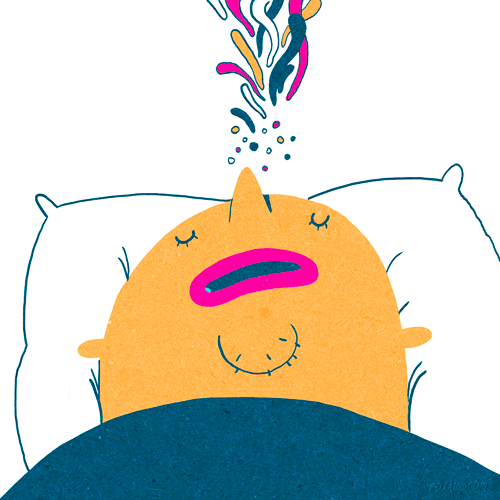
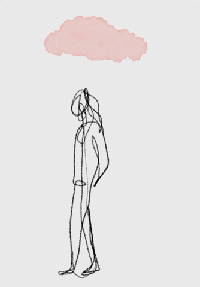

Усі люди різні. Відповідно – й їхні думки, дії, почуття, таймінг, діяльність та упередження. Хтось вірить, що кожна людина має місію у житті та вперто шукає її. Інші думають, що це все виправдання, щоб не працювати.
Цей текст призначений для тих, хто шукає себе, адже пошук – це тисячі можливих варіантів і доріг. І чудово, якщо ви оберете свою.
Якщо ви дочитаєте текст до кінця та у вас з’являться відповіді, то їх варто записувати десь у телефоні/ планшеті/ ноутбуці, на листочку. Адже ваші думки для початку мають стати реальністю на папері.
Якщо говорити про призначення, то варто звернути увагу на декілька запитань:
1. Що буде, якщо я визначу власну місію? 2. Чому я не можу визначитись? 3. Як врешті–решт зрозуміти, що є моїм призначенням?
Причини того, що ви не можете визначитися із власним призначенням – різні. Можливо, ви підлаштовувались під оточення і забували при цьому відстояти щось своє. А може ви не говорили те, що було важливо для вас та що ви хотіли, щоб інші почули про вас. Ця ситуація повторювалась неодноразово? Пам’ятайте, поки ви живі – є час щось змінити. Для початку почніть висловлювати свою думку, говорити про свої почуття і відчуття, які у вас викликає будь-яка інформація, факти, думки, події, люди. Це, звісно, непросто. Особливо, якщо довго або ніколи цього не робили.
Якщо раптом ви думаєте, що ваші слова неважливі (скажу вам по-секрету) ви ніколи не знаєте, яке ваше слово чи фраза зможуть змінить чиєсь життя. Так, все настільки глобально.
Я так кажу, тому що своє призначення бачу у тому, щоб словами змінювати дії людей, які в майбутньому вплинуть на їхні думки, упередження. Те, у що вони вірять, як вони виглядають з часом вплине на їх життєвий шлях.
Третє – не існує універсального «дещо», що вирішить проблему.
Сенс життя здобувається в дії, в іншому місці його просто немає. Австрійський психолог Віктор Франкл писав про індивідуальний сенс життя, коли кожен з нас вибирає, для чого йому жити, інформує Ukr.Media.
Пошуки сенсу життя свідчать про негаразди поточного моменту у вашому житті. Щось безумовно дає збій: відносини, робота чи здоров'я. З цим можна і потрібно розбиратися. Питання про сенс життя постає, коли людина нещасна в любові. Відсутність любові завжди породжує страх невідомості, змін і смерті. Згадайте, коли ви любили когось дуже сильно чи мучило вас питання про сенс вашого існування?
Запитайте у десяти людей, що таке щастя, – і отримаєте абсолютно різні відповіді, адже кожен бачить його в чомусь своєму. Для одного – це час у сімейному колі, інший покладає всі надії на гроші, третій рветься подорожувати. Але часто буває таке, що ми маємо все, про що мріяли, – і все одно не відчуваємо себе щасливими. Як же впустити щастя в власне життя? Наші фахівці, психолог Ірина Сірик і психолог, психотерапевт Ірина Щербакова, впевнені: для цього потрібно лише обзавестися деякими корисними звичками. Ми з'ясували, якими саме.
ЗАЙМАТИСЯ УЛЮБЛЕНОЮ СПРАВОЮ
Хочете відчувати себе щасливим? Знайдіть роботу, яка приносить задоволення. Якщо хобі і захоплення переростають в професію і справу всього життя – успіх в 99% випадків гарантований. Практично всі великі люди були буквально закохані в те, чим займалися. А якщо ми змушуємо себе працювати, то кожен будній день прокидаємося нещасними. Перевірити, чи займаєтеся ви улюбленою справою, допоможе тест: уявіть, що ви виграли мільйон. Що будете робити? Якщо першою в голову прийшла думка "Звільнюсь" – значить, ця робота точно не приносить вам задоволення. Може, щоб стати щасливим, варто її змінити?
ДОПОМАГАТИ ІНШИМ
Всім людям приємно отримувати щось від навколишньо госвіту. Допомога і підтримка друзів дають можливість відчути себе потрібним і важливим. Але мало хто знає:"зворотний хід",коли ви підтримуєте або допомагаєте тим,хто цього потребує, несе в собі ще більший енергетичний заряд! Роблячи безкорисливо добрі справи,людина наповнюється енергією зсередини. Візьміть собі за звичку хочаб раз на місяць робити добру справу - і побачите, як змінитьс яжиття.
РАДІТИ ДРІБНИЦЯМ

З віком багато втрачають здатність щиро радіти життю.Але якщо ви звикли в усьому бачити негатив,щастя вам не посміхнеться.Повірте:у кожного є приводи для радості,просто в низці проблем ми їх не помічаємо.І це треба виправляти! Як? Дуже просто:по дорозі додомудумайте не про те, як сильно втомилися,а про те, що хорошого відбулося за день.Якщо візьмете собі за звичку хоча б раз в день знаходити привід порадіти і посміхнутися, у вашому житті почне переважат ипозитив.
ШУКАТИ КОРИСТЬ
Часто ми настільки зациклюємось на проблемі, що перестаємо бачити шляхи вирішення.З таким підходом важко бути щасливим, адже життя непередбачуване, і чорні смуги - її невід'ємна частина. Так що навіть якщо все йде не за планом,навчіться не просто приймат иситуацію, а шукати і отримувати користь.Вас звільнили з роботи? Але тепер ви вільні від підйомів вранку, а головне - можете знайти роботу своєї мрії.Пам'ятайте:"Все,що не робиться,-на краще!".
ПРИЙМАТИ СЕБЕ
Якщо ви не задоволені своєю зовнішністю або собою як особистістю - не зможете відчувати себе щасливим.Потрібно чітко усвідомити, що всі люди різні,і ви не зобов'язані змінюватися лише тому,щов ідрізняєтеся від оточення або комусь не подобаєтеся. Постійно комплексуєте через кирпатий ніс або веснянки наобличчі? Але ж саме вони роблять вас особливими.Коли ви полюбит есвої "особливості", багато проблем зникнуть самі собою.
ВИБИРАТИ ОТОЧЕННЯ
Напевно кожен чув фразу:"Скажи мені, хто твій друг, і я скажу, хто ти". Звичайно, не варто беззастережно судити людину по його оточенню, але частка істини в висловлюванні є.Якщо вашаподруга без кінця скаржиться,як вона нещасна, а знайомий нарікає на вселенську несправедливість - ви теж почнете бачити світ в чорних фарбах. Спробуйте "почистити" своє оточення.Якщо людина приносить у ваше життя тільки негатив - варто звести до мінімуму спілкування з нею.
СЛУХАТИ СЕБЕ

Прекрасно, якщо ви відмінний сім'янин, намагаєтеся реалізувати мрії своє їсім'ї і завжди думаєте про близьких. Але важливо в гонитві за бажанням догодити оточуючим не втратити себе .Навчіться чути себе і задовольняти власні потреби - звичайно, не на шкоду близьким. Абстрагуйтеся від зовнішнього світуі запитайте себе: "Чого хочу саме я? "Чесно відповідайте собі на питання, і постарайтеся задовольнити своє бажання.Можливо, ви вже "100років" не були на риболовлі, яку так любите, або хочете сходити на СПА-процедури.
ГОВОРІТЬ "ДЯКУЮ"
Щаслива людина – це, перш за все, вдячна людина. Навчіться дякувати долі за будь-які надані можливості, за все, що вона вам дарує. Візьміть собі за звичку щодня перед сном знаходити хоча б одну річ, за яку ви від чистого серця можете сказати "дякую". Неважливо, що це буде – може, ви подякуйте за хорошу погоду або за те, що змогли насолодитися співом птахів, зустрілися зі старим знайомим або вас підвищили. Якщо щодня будете говорити "дякую", згодом дні заграють яскравими фарбами, а щастя оселиться у вашому житті.
Отже, схоже, щастя – це не пункт призначення, це подорож. Кожен мріє бути щасливим, але як же цього досягти? Відповідь Мартіна Селігмана – до щастя потрібно рухатися, йти, докладати зусиль, принаймні на 40% зі ста. Причому в людини є вибір напрямку для руху. Однак абсолютизація будь-якого з напрямків веде до нехтування важливими частинами інших доріг – уявіть, скільки краєвидів можна втратити, забуваючи оглядатися на інші стежки! Шукаючи насолод, можна заблукати у їх розмаїтті та втратити нагоду зайнятися тим, що справді приносить радість – наприклад, улюбленою діяльністю. Активно шукаючи сенс, можна й не помітити його, весь ресурс потративши на пошук того, що завжди було поряд – у дрібницях навколо.